A Pioneer 10 story
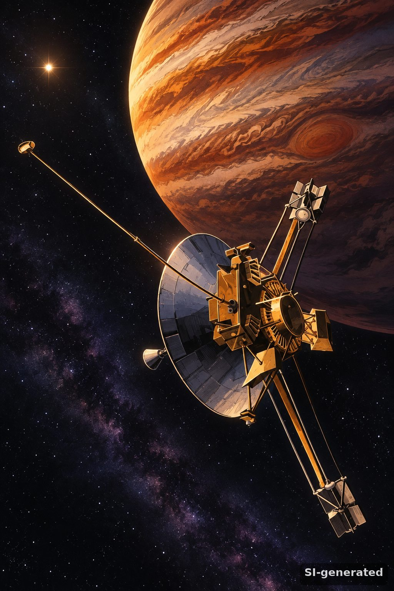
Press SPACE to beginChapter 1 — A Message to the Unknown
Click the symbols on the plaque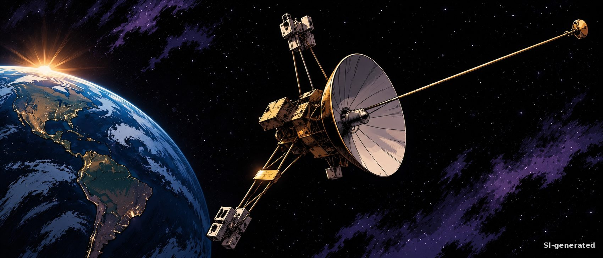
2 March 1972. Pioneer 10 leaves Earth, carrying a small gold-anodized plaque.
They gave me a map of home. Just in case someone finds me.
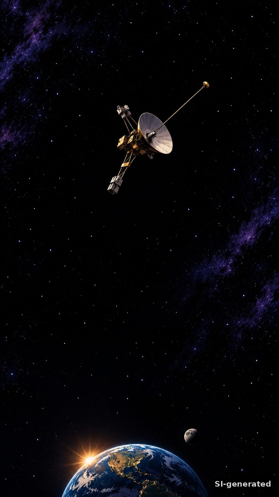
Chapter 2 — Into the Unknown
No one had traveled this road before.
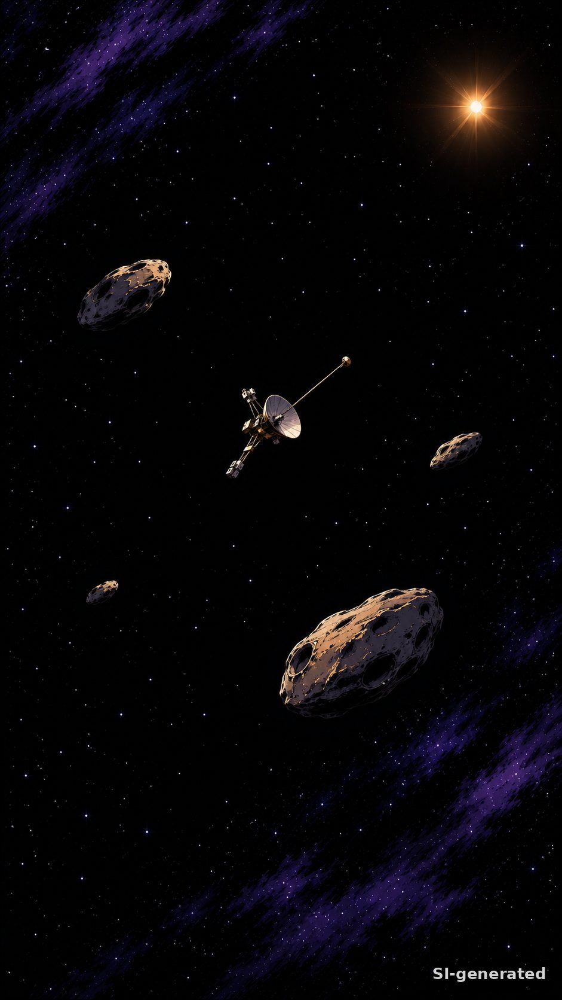
The real asteroid belt is mostly empty space. Rocks are usually far apart.
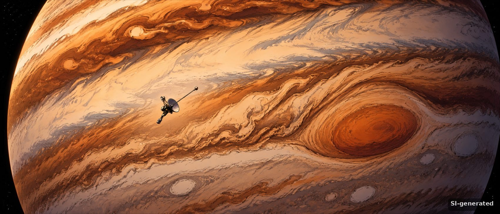
Chapter 3 — The Giant
4 December 1973. Closest approach: about 130,000 km from Jupiter.
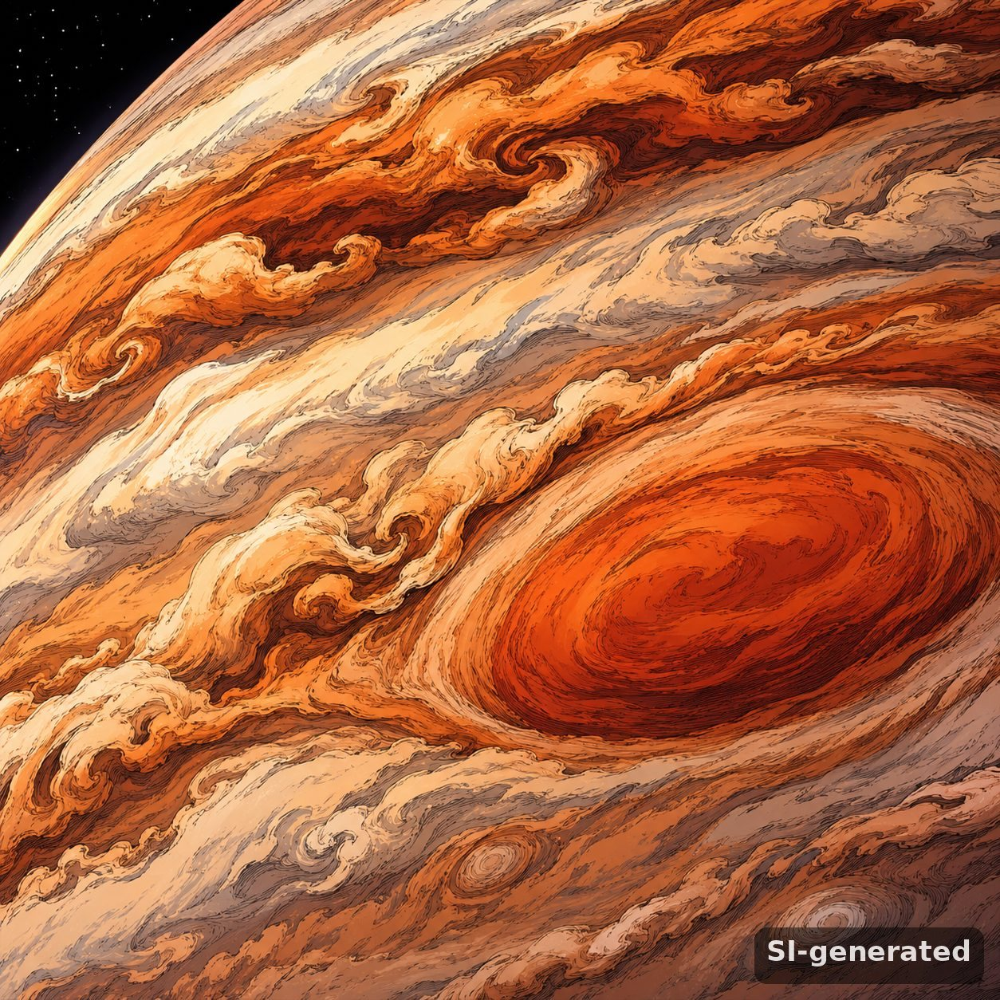
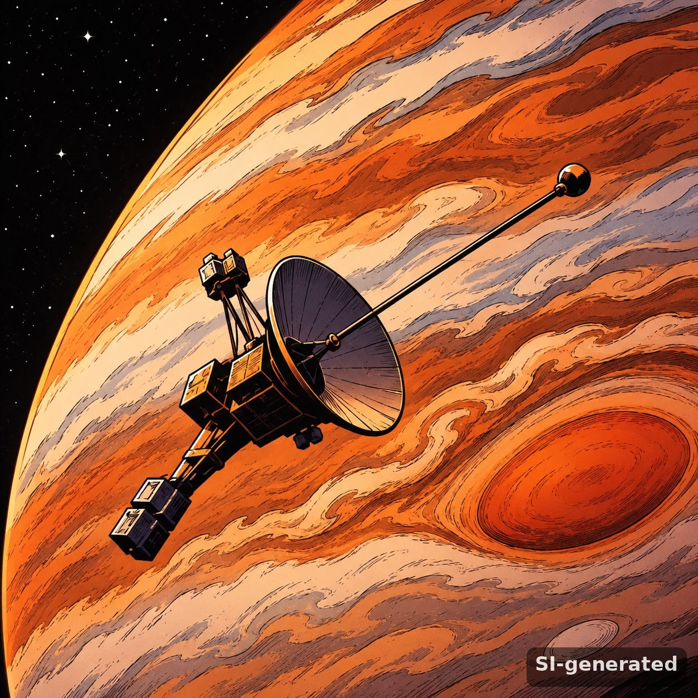
I had crossed the darkness to meet a giant.
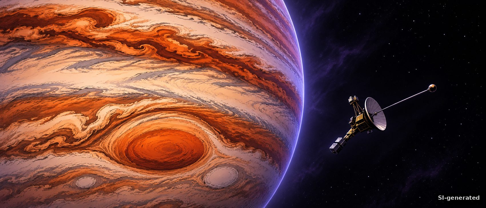
Chapter 4 — The Invisible Danger
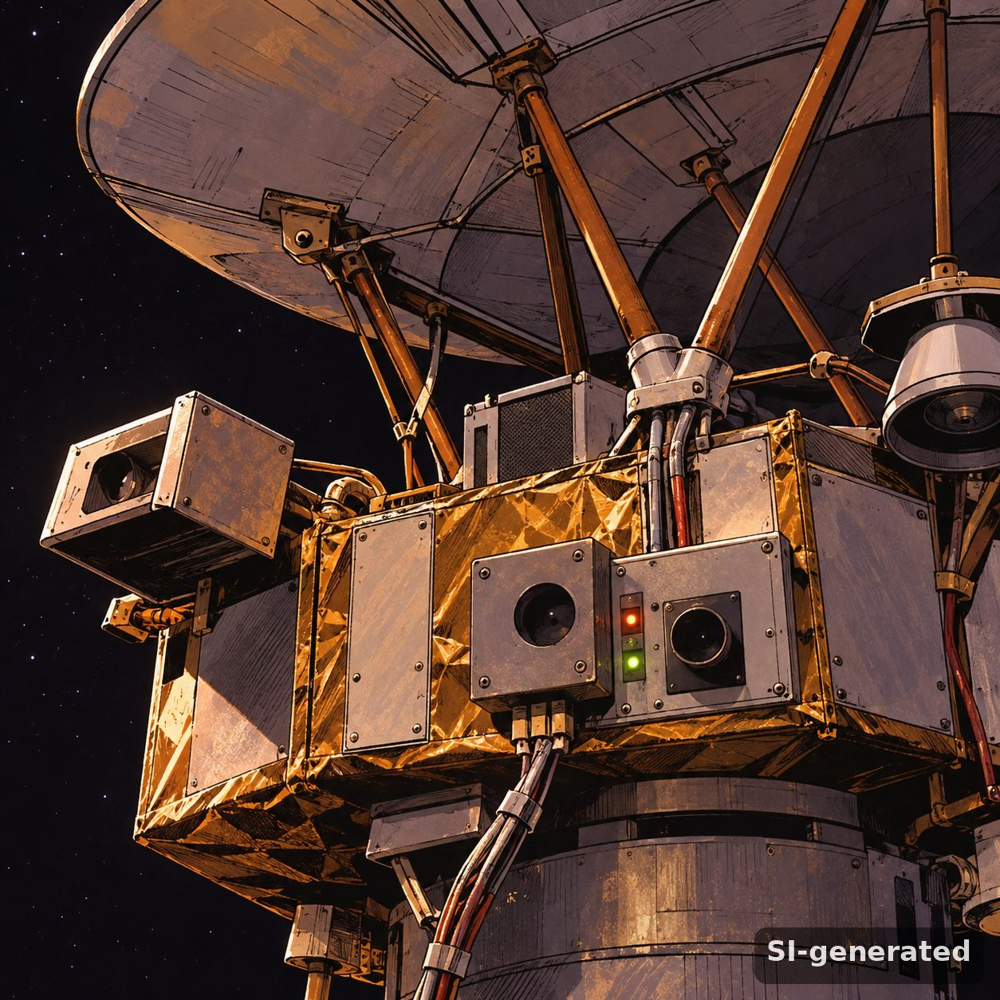
Jupiter's radiation was so intense it triggered false commands aboard Pioneer 10.
Not every danger can be seen. Some must be measured.
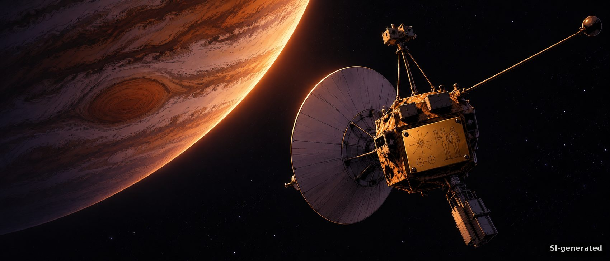
Chapter 5 — The Golden Plaque
If anyone ever finds me, perhaps they'll know where I came from.
Question 1 of 3 — what does the glowing symbol mean?
Chapter 6 — The Last Signal
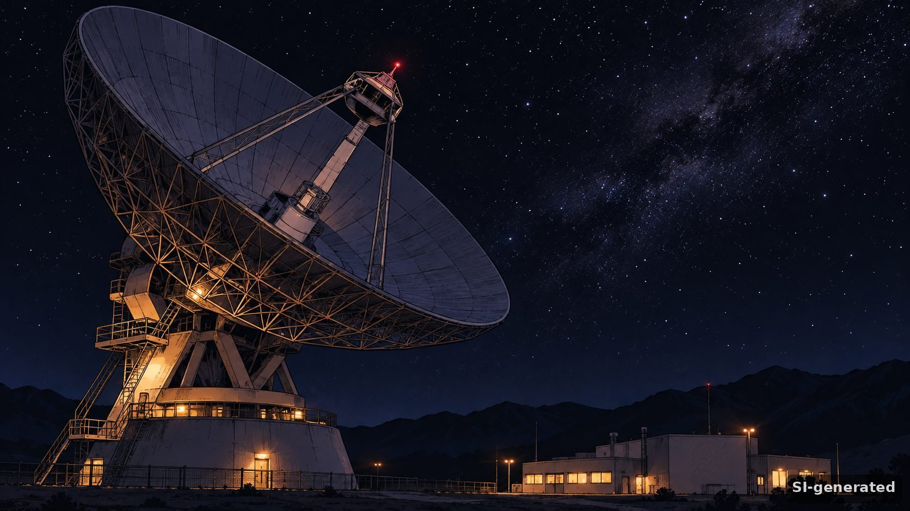
23 January 2003. The last faint signal reaches Earth, from about 12.2 billion km away. A final attempt in 2006 hears nothing.
I sent everything I could. Then the distance became silence.
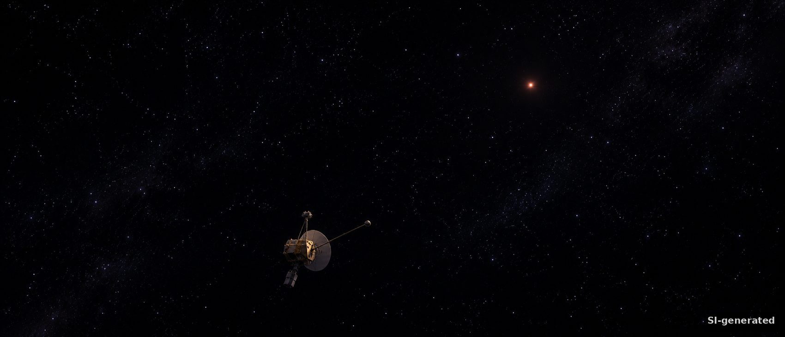
Chapter 7 — The Journey Continues
Pioneer 10 is heading toward the red star Aldebaran. It should pass it in about two million years.
I may never speak again. But I am still carrying our story.
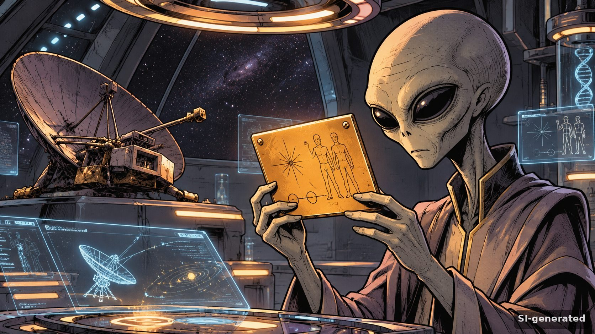
Epilogue — Someday…
An imagined epilogue. This hasn't happened — yet.
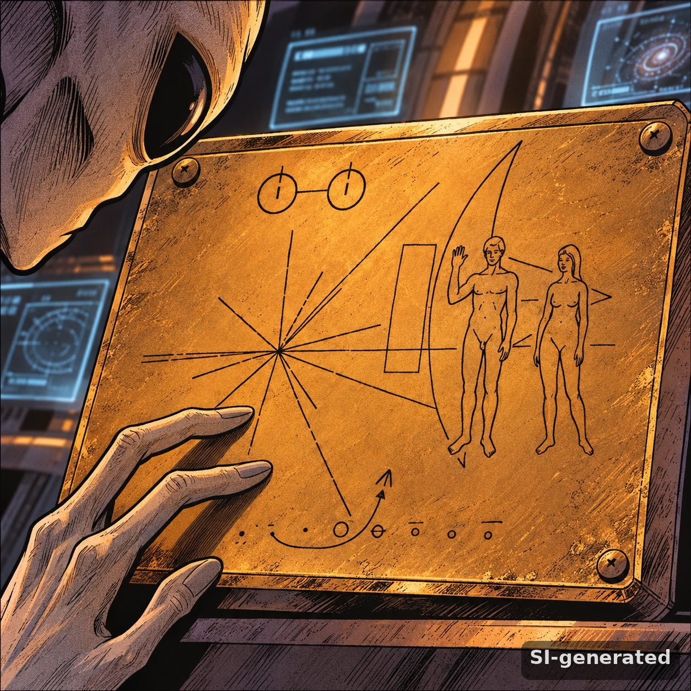
…someone, somewhere, reads the map of home.